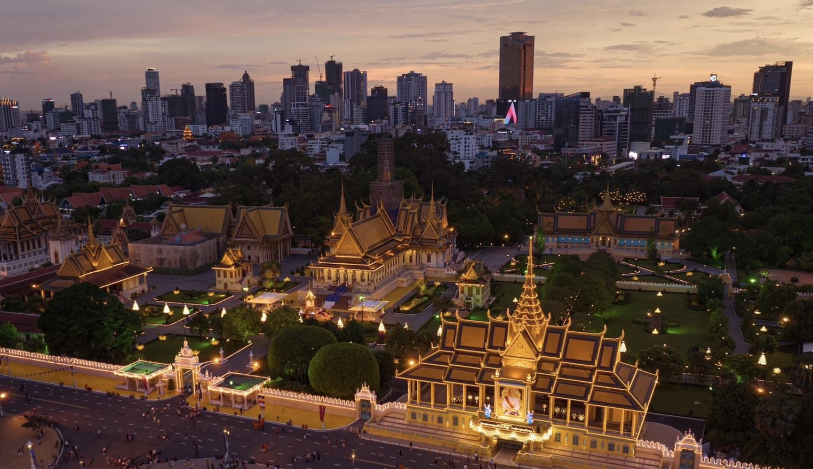

PHNOM PENH
 Phnom Penh (/pəˌnɒm ˈpɛn, ˌpnɒm -/;[6][7][8] Khmer: ភ្នំពេញ, Phnum Pénh [pʰnomˈpɨɲ], lit. 'Penh's Hill/Mountain') is the capital and most populous city of Cambodia. It has been the national capital since the French protectorate of Cambodia and has grown to become the nation's primate city and its economic, industrial, and cultural centre. Before Phnom Penh became capital city, Oudong was the capital of the country.
Phnom Penh succeeded Angkor Thom as the capital of the Khmer nation but was abandoned several times before being reestablished in 1865 by King Norodom. The city formerly functioned as a processing center, with textiles, pharmaceuticals, machine manufacturing, and rice milling. Its chief assets, however, were cultural. Institutions of higher learning included the Royal University of Phnom Penh (established in 1960 as Royal Khmer University), with schools of engineering, fine arts, technology, and agricultural sciences, the latter at Chamkar Daung, a suburb. Also located in Phnom Penh were the Royal University of Agronomic Sciences and the Agricultural School of Prek Leap.[9
The city was nicknamed the "Pearl of Asia" for its early 20th century colonial French architecture, which included Art Deco works.[10] Phnom Penh, along with Siem Reap and Sihanoukville, are significant global and domestic tourist destinations for Cambodia. Founded in 1372, the city is noted for its historical architecture and attractions. It became the national capital in 1434 following the fall of Angkor, and remained so until 1497.[11] It regained its capital status during the French colonial era in 1865. There are a number of surviving colonial-era buildings scattered along the grand boulevards.
On the banks of the Tonlé Sap, Mekong, and Bassac Rivers, Phnom Penh is home to more than 2 million people, approximately 14% of the Cambodian population.[4] The Greater Phnom Penh area includes the nearby Ta Khmau city and some districts of Kandal province.[12]
The city has hosted numerous regional and international events, the most notable being the 2002, 2012, and 2022 ASEAN Summit, the 32nd Southeast Asian Games, and the 12th ASEAN Para Games. Phnom Penh will be the first Cambodian city and the second city in Southeast Asia to host the Asian Youth Games in 2029.[13]
/* From Uiverse.io by ZacharyCrespin */